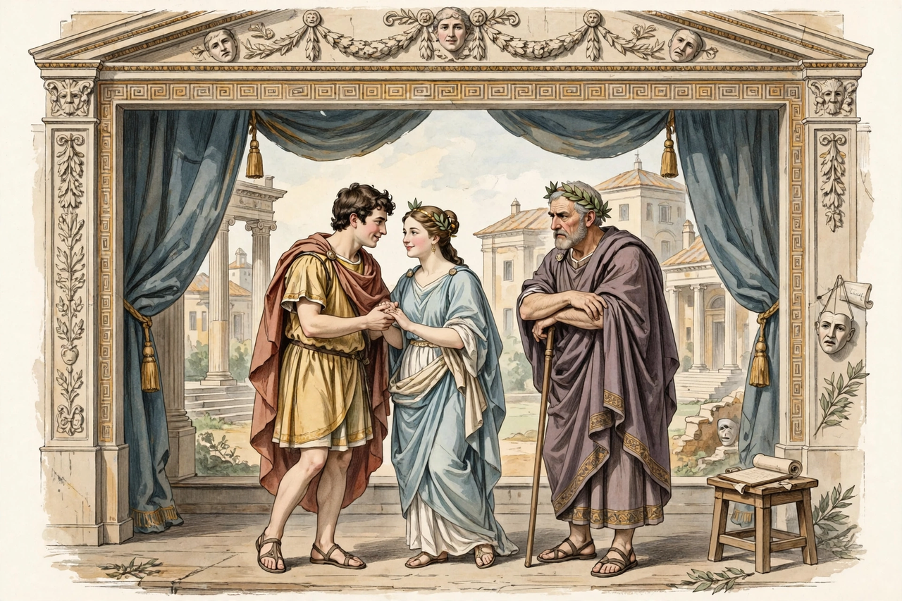

From Wikipedia, the free encyclopedia
| Born | c. 185/195 BC Carthage |
|---|---|
| Died | c. 159 BC |
| Occupation | Playwright |
| Language | Latin |
| Genre | Comedy (fabula palliata) |
| Notable works | Andria, Eunuchus, Adelphoe |
Publius Terentius Afer, better known in English as Terence (c. 185/195 – c. 159 BC), was a Roman African playwright during the Roman Republic. His six comedies, all adapted from Greek originals — principally by Menander — survived complete and were famous in antiquity and the Middle Ages for the purity and elegance of their Latin.

Terence's refined comedies became school classics.
According to the ancient biography by Suetonius, Terence was born at Carthage and came to Rome as the slave of the senator Terentius Lucanus, who educated and freed him because of his talent and good looks; his cognomen Afer ("the African") reflects his origin. He was associated with the circle of Scipio Aemilianus, and rivals insinuated that his aristocratic friends wrote his plays — a charge reflected in his prologues. He died young, around 159 BC, on a journey to Greece, reportedly from illness or grief at losing manuscripts in a shipwreck.
Terence's six plays, produced between 166 and 160 BC, are Andria (The Woman of Andros), Hecyra (The Mother-in-Law), Heauton Timorumenos (The Self-Tormentor), Eunuchus (The Eunuch), Phormio and Adelphoe (The Brothers). The Eunuchus was his greatest popular success; the Hecyra famously failed twice before being performed to the end.
Unlike the exuberant farce of Plautus, Terence's comedies are subdued, character-driven and humane, with double plots, restrained language and little song. The famous line homo sum, humani nihil a me alienum puto — "I am human, and I consider nothing human alien to me" — comes from the Heauton Timorumenos.
Terence was a central author of the Latin school curriculum from antiquity through the Renaissance; his plays were copied in lavish illustrated manuscripts, commented on by Donatus, imitated by Renaissance dramatists, and performed by schoolboys across Europe. His polished conversational Latin set the standard for comic dialogue.